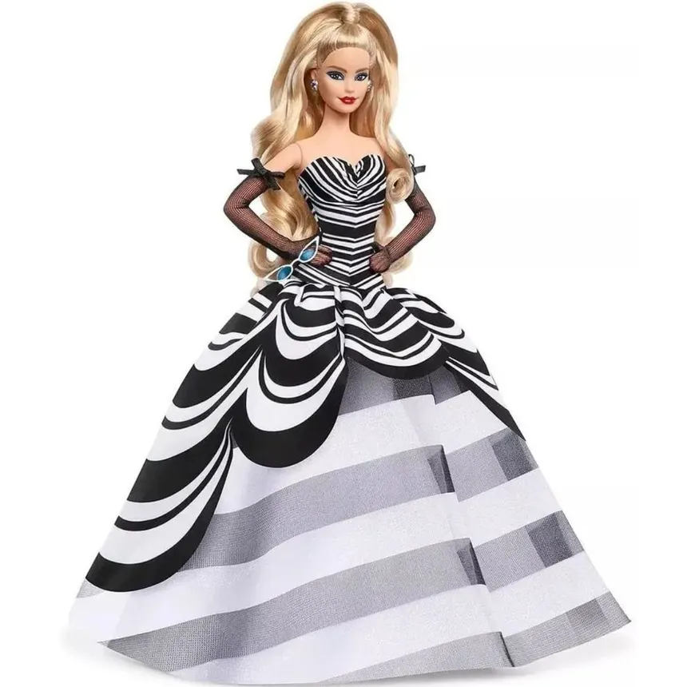

Barbie Signature
Barbie Aniversário de 65 Anos
Edição comemorativa de colecionador inspirada no maiô listrado original de 1959.
Ficha Técnica
- Ano de Lançamento: 2024
- Linha: Black Label
- Tipo de Corpo: Model Muse
- Molde Facial: Original 1959 (Vintage Repro)
- Designer: Carlyle Nuera
Descrição
Celebrando 65 anos de moda e pioneirismo, esta boneca homenageia o traje clássico de 1959 em um vestido de gala preto e branco esculpido com corte sereia. O visual é finalizado com óculos escuros estilo gatinho, brincos de argola retrô e lábios vermelhos marcantes.
Itens Inclusos
- Boneca Barbie com vestido de gala
- Par de sapatos de salto alto
- Óculos escuros e brincos
- Suporte de exibição (Stand)
- Certificado de Autenticidade (COA)